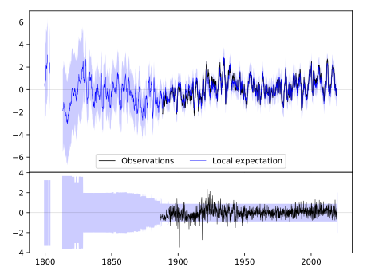
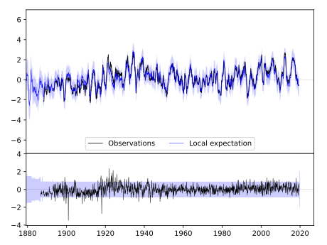
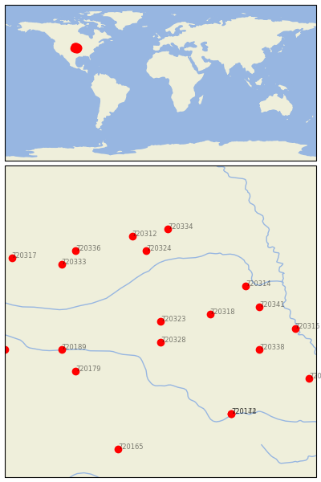

GENEVA [USA]


| Neighbour | Name | Country | Distance | Lon/Lat | Years |
|---|
| 720323 | GENEVA | USA | 0 | -97.6, 40.5 | 1886-2019 |
| 720328 | HEBRON | USA | 33 | -97.6, 40.2 | 1886-2019 |
| 720318 | CRETE | USA | 60 | -96.9, 40.6 | 1882-2019 |
| 720324 | GENOA 2 W | USA | 112 | -97.8, 41.5 | 1875-2019 |
| 720314 | ASHLAND NO 2 | USA | 115 | -96.4, 41.0 | 1888-2019 |
| 720341 | SYRACUSE | USA | 120 | -96.2, 40.7 | 1871-2019 |
| 720338 | PAWNEE CITY | USA | 126 | -96.2, 40.1 | 1882-2019 |
| 720189 | FRANKLIN | USA | 126 | -99.0, 40.1 | 1890-2019 |
| 720179 | SMITH CTR | USA | 128 | -98.8, 39.8 | 1888-2019 |
| 720312 | ALBION | USA | 137 | -98.0, 41.7 | 1892-2019 |
| 720334 | MADISON | USA | 144 | -97.5, 41.8 | 1893-2019 |
| 720333 | LOUP CITY | USA | 147 | -99.0, 41.3 | 1893-2019 |
| 720336 | NORTH LOUP | USA | 150 | -98.8, 41.5 | 1888-2019 |
| 720315 | AUBURN 5 ESE | USA | 161 | -95.7, 40.4 | 1893-2019 |
| 720174 | MANHATTAN | USA | 167 | -96.6, 39.2 | 1891-2019 |
| 720142 | MANHATTAN D.Burnette | USA | 167 | -96.6, 39.2 | 1828-2019 |
| 720316 | BEAVER CITY | USA | 191 | -99.8, 40.1 | 1890-2019 |
| 720169 | HORTON | USA | 199 | -95.5, 39.7 | 1888-2019 |
| 720317 | BROKEN BOW 2 W | USA | 202 | -99.7, 41.4 | 1893-2019 |
| 720165 | ELLSWORTH | USA | 206 | -98.2, 38.7 | 1866-2019 |